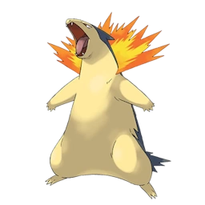
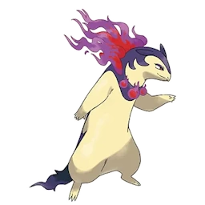

Tipo:
Fuego
Descripción:
Typhlosion es capaz de envolver su cuerpo en un manto de llamas tan intenso que el aire a su alrededor vibra como si estuviera a punto de estallar. Cuando libera todo su poder, su silueta se difumina entre el calor, convirtiéndose en un borrón incandescente que arrasa con cualquier obstáculo. A pesar de su ferocidad, suele mantenerse tranquilo y reservado, observando con ojos atentos antes de actuar. Solo cuando se siente amenazado o debe proteger a los suyos desata su furia ígnea, generando explosiones de fuego que pueden reducir a cenizas incluso el terreno. En calma, su lomo apenas desprende un tenue resplandor, pero basta un instante para que ese brillo se transforme en un estallido abrasador.
Evoluciones

Typhlosion de Hisui